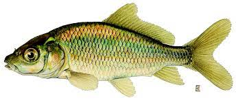
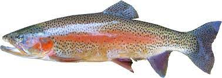
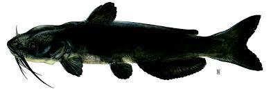

Fish Riddle root is a new invasive species of plant.
This plant has been recorded popping up all over the world in various lakes and rivers.
Biologists are conflicted as to whether or not this is a good development or not.
This new Riddle Root seems to only affect the populations of noxious fish Because they are the only fish tempted to eat it.
There is no clear explanation for how this new root developed all around the world so quickly or why only noxious fish are attracted to.
What Biologists have been able to observe is that this new root is shaped like a question mark, and is covered with sharp thorns.
The Riddle Root also exudes a strong scent
(Some reports saying it smells like onion when taken out of the water)
that attracts several species of fish but noxious species seem to be the only ones tempted to eat it.
Common Carp
Rainbow Trout
Catfish
Here are some of the locations around the world in which Riddle Root has been found: